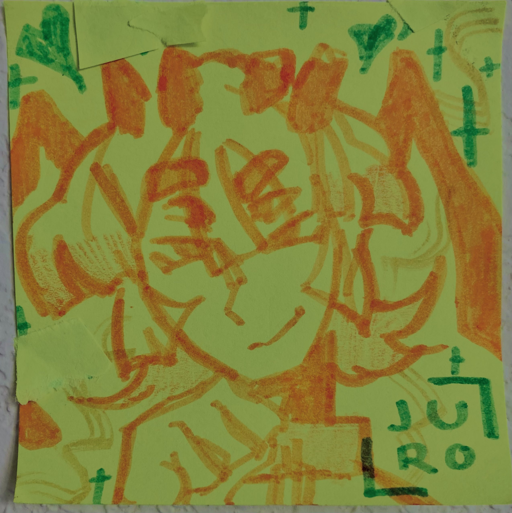
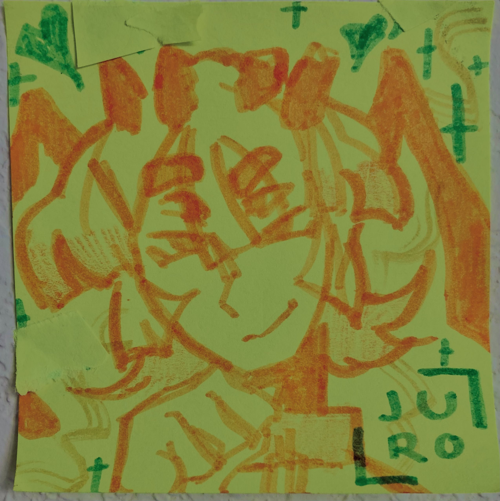
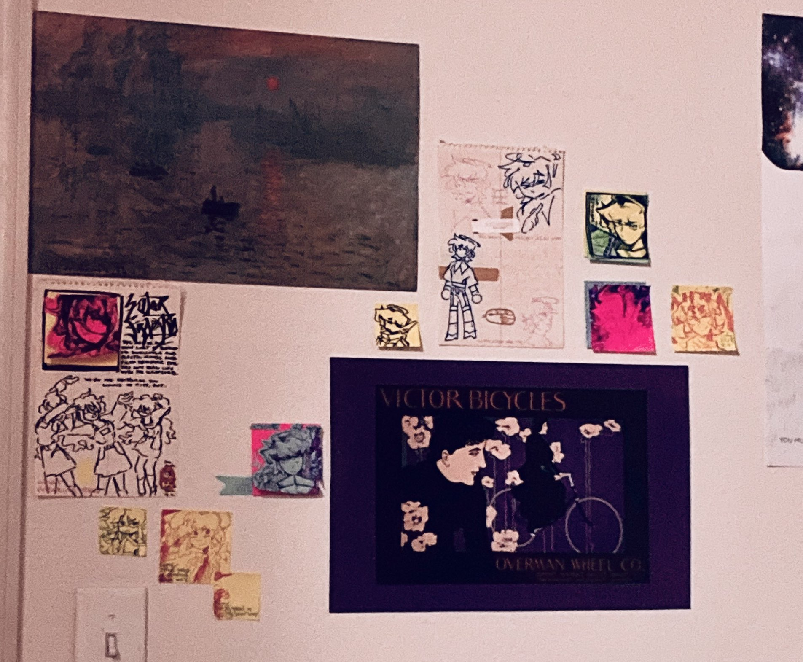

stickynotes
creation date: apr 1
characters featured: (in order) enzo, juro, enzo again lol
a continuation of this endeavor. my wall is sloowly starting to look less depressing.
i ordered some prints of my digital artwork a few weeks ago and have not heard back from the print store since. im on the edge of my seat about it, i've been left totally and completely in the dark RAAAHHHH.
urg..... i miss having more time to draw. fuckworld.... ]
older doodles from the past months:
creation date: jan 30-mar 5


you know who it is.

i drew these at various points in between winter break's end and spring break's beginning. the first drawing was a doodle from my class notes that i colored digitally, and the one below i drew immediatley after finishing my last exam. fitting visual.


heres one of trinity.

and..... an alt design for somebody.

overall i don't have much to say about these. they were stress relievers in between schoolwork and so are rly sloppy and not too visually *there* 🤷
gahhh these past few months in particular have been p slow for polished artworks, i feel kinda sad abt it,, the consistency in which motivation hits will continue to be scattered ig. mostly, i feel insane.